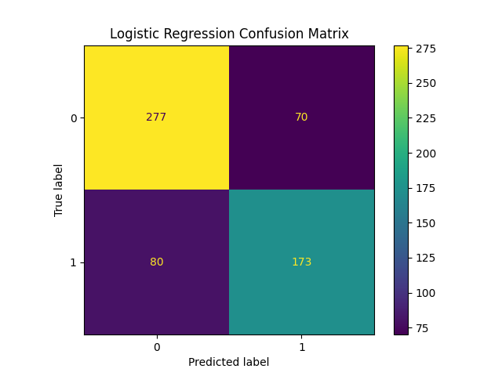
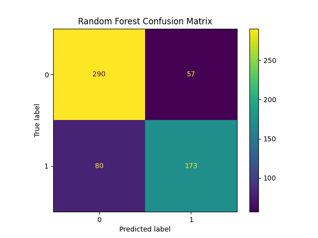

Random Forest vs Logistic Regression: Predicting Game Outcomes
Goal: Compare a simple, interpretable model (logistic regression) with a more flexible, complex model (random forest) for predicting whether the home team wins. We’ll walk through data simulation, training, evaluation, and interpretation.
Introduction: The Dataset
To keep things simple, we simulate a small sports dataset in a separate Python script compare_models.py. Each row represents a matchup with:
home_score: points scored by the home team
away_score: points scored by the away team
home_advantage: a feature that encodes “home-court” advantage
target: whether the home team won (1) or lost (0)
This practice data keeps the focus on model comparison instead of data wrangling.
Simulating Game Outcomes
To demonstrate how logistic regression and random forest handle different data patterns, we simulate a small sports dataset. Outcomes depend on nonlinear effects and interactions, which are easier for random forests to capture than logistic regression.
Code
import numpy as npimport pandas as pd# Simulate a simple matchup datasetn_games =2000home = np.random.binomial(1, 0.5, n_games)strength_diff = np.random.normal(0, 1, n_games)rest_diff = np.random.normal(0, 1, n_games)# Outcome depends on nonlinear interactionslin =1.2* home * strength_diff -0.7* rest_diff**2+0.5* strength_diff**3p_home_win =1/ (1+ np.exp(-lin))y = np.random.binomial(1, p_home_win)df = pd.DataFrame({"home": home,"strength_diff": strength_diff,"rest_diff": rest_diff,"home_win": y})df.head()
home
strength_diff
rest_diff
home_win
0
1
2.263983
-0.223096
1
1
1
0.275613
-0.409468
0
2
0
0.948838
-0.338505
1
3
1
0.658653
0.402507
0
4
1
1.036776
-1.182887
0
Simple Model: Logistic Regression
Logistic regression is the baseline. It assumes a linear relationship between features and the log-odds of winning.
Pros: fast, interpretable, coefficients tell us feature impact
Cons: can miss nonlinear interactions
Here’s the confusion matrix for Logistic Regression:

Complex Model: Random Forest
Random forest is an ensemble of decision trees. It captures nonlinear patterns and interactions.
Pros: higher flexibility, often better accuracy
Cons: less interpretable, requires more tuning
Here’s the confusion matrix for Random Forest:

Compare Results
We train both logistic regression (LR) and random forest (RF) on the simulated dataset. Logistic regression assumes a linear relationship, while random forest can capture nonlinear effects and interactions.
Logistic Regression is simple, interpretable, and explains feature impact clearly. It performs well when relationships are mostly linear.
Random Forest captures nonlinear patterns and feature interactions, giving it a slight edge in predictive accuracy for this dataset.
Takeaway: In sports analytics (and most applied work), there’s a tradeoff: choose logistic regression when you need transparency, and random forest when you want the best predictive performance.
Call to Action: Try running the same comparison on your own dataset from your favorite sports team. Download their stats, simulate or process relevant features, and test linear vs nonlinear models. See for yourself how model choice can influence your predictions.
Source Code
---title: "Random Forest vs Logistic Regression: Predicting Game Outcomes"date: 2025-09-29---# Random Forest vs Logistic Regression: Predicting Game Outcomes**Goal:** Compare a simple, interpretable model (logistic regression) with a more flexible, complex model (random forest) for predicting whether the home team wins. We’ll walk through data simulation, training, evaluation, and interpretation.---## Introduction: The DatasetTo keep things simple, we simulate a small sports dataset in a separate Python script `compare_models.py`. Each row represents a matchup with:- **home_score**: points scored by the home team - **away_score**: points scored by the away team - **home_advantage**: a feature that encodes “home-court” advantage - **target**: whether the home team won (1) or lost (0) This practice data keeps the focus on model comparison instead of data wrangling.---## Simulating Game OutcomesTo demonstrate how logistic regression and random forest handle different data patterns, we simulate a small sports dataset. Outcomes depend on **nonlinear effects** and **interactions**, which are easier for random forests to capture than logistic regression.```{python}import numpy as npimport pandas as pd# Simulate a simple matchup datasetn_games =2000home = np.random.binomial(1, 0.5, n_games)strength_diff = np.random.normal(0, 1, n_games)rest_diff = np.random.normal(0, 1, n_games)# Outcome depends on nonlinear interactionslin =1.2* home * strength_diff -0.7* rest_diff**2+0.5* strength_diff**3p_home_win =1/ (1+ np.exp(-lin))y = np.random.binomial(1, p_home_win)df = pd.DataFrame({"home": home,"strength_diff": strength_diff,"rest_diff": rest_diff,"home_win": y})df.head()```## Simple Model: Logistic RegressionLogistic regression is the baseline. It assumes a linear relationship between features and the log-odds of winning.- **Pros:** fast, interpretable, coefficients tell us feature impact - **Cons:** can miss nonlinear interactions Here’s the confusion matrix for Logistic Regression:---## Complex Model: Random ForestRandom forest is an ensemble of decision trees. It captures nonlinear patterns and interactions.- **Pros:** higher flexibility, often better accuracy - **Cons:** less interpretable, requires more tuning Here’s the confusion matrix for Random Forest:------## Compare ResultsWe train both logistic regression (LR) and random forest (RF) on the simulated dataset. Logistic regression assumes a linear relationship, while random forest can capture **nonlinear effects and interactions**.```{python}import jsonimport pandas as pdimport os# Load metricswithopen("results/metrics.json") as f: results = json.load(f)df = pd.DataFrame([ {"Model": "Logistic Regression", "Accuracy": results["Logistic Regression"], "Notes": "Simple, interpretable"}, {"Model": "Random Forest", "Accuracy": results["Random Forest"], "Notes": "Captures nonlinear patterns"}])df```---## Conclusion- **Logistic Regression** is simple, interpretable, and explains feature impact clearly. It performs well when relationships are mostly linear. - **Random Forest** captures nonlinear patterns and feature interactions, giving it a slight edge in predictive accuracy for this dataset. **Takeaway:** In sports analytics (and most applied work), there’s a tradeoff: choose logistic regression when you need transparency, and random forest when you want the best predictive performance. **Call to Action:** Try running the same comparison on your own dataset from your favorite sports team. Download their stats, simulate or process relevant features, and test linear vs nonlinear models. See for yourself how model choice can influence your predictions.